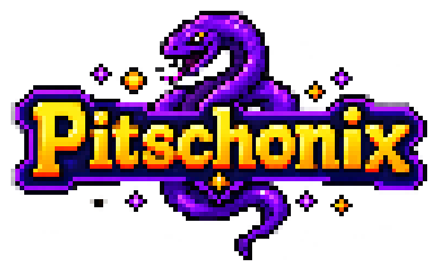
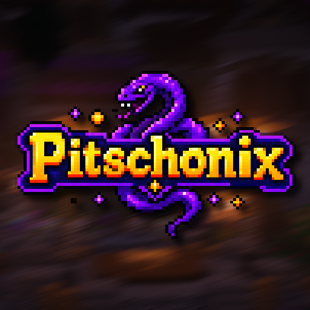

01
Core
Legacy Lobby
A focused 1.8.8 network hub that remains accessible to newer supported clients.

Classic combat. Modern worlds. One community.
A cross-version Minecraft network designed around a clean lobby, varied game modes and a consistent player experience.
pitschonix.eu
Please expect occasional bugs and temporary issues. Some game modes and features are still being developed, tested or polished, so not every mode is finished or fully refined yet.
Pitschonix combines a legacy-friendly lobby with room for modern servers, competitive modes and long-term community worlds.
A focused 1.8.8 network hub that remains accessible to newer supported clients.
Classic combat foundations for Duels, SkyWars, BedWars and other fast game modes.
Current Paper-based modes built for newer Minecraft versions and modern mechanics.
Persistent survival, special event servers and room for the community to grow together.

The network is structured to welcome players through a legacy lobby while individual modes can use their own verified version requirements.
Join the lobby from supported Minecraft Java versions between 1.8 and 26.2.
Modern modes can require newer clients without disconnecting incompatible players from the lobby.
Vanilla clients remain supported; NoRisk Client features are optional enhancements.
No launcher tricks and no required resource pack. Open Minecraft Java Edition and connect.
Use a supported version from 1.8 through 26.2.
Open Multiplayer, select Add Server and choose any server name.
Use pitschonix.eu, save it and join the network.
Checking server
Live status updates automatically.
Pitschonix is led by two Minecraft network owners working under one shared identity.

Minecraft network owner

Minecraft network owner
News, clips, updates and community announcements will be shared through the official Pitschonix channels.
Use pitschonix.eu. The alternative address play.pitschonix.eu connects to the same network.
The network target is Minecraft Java Edition 1.8 through 26.2. Individual modern modes may require Minecraft 1.21.11 or newer.
No. Vanilla Minecraft clients remain supported. NoRisk Client features are optional enhancements.
Not yet. Pitschonix is currently in public beta. Bugs and temporary issues may occur, and some game modes or features are still unfinished, unavailable or being polished.